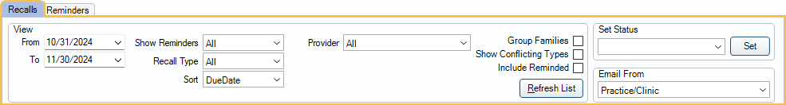

Recall List
Use the Recall List to send and track recall appointment reminders.
In the Appointments Module, click Lists, Recall.

The Recall List includes patients who need to be scheduled for a recall (e.g., prophy or perio) appointment. Reminders can be easily generated and appointments quickly scheduled from the list.
Once a reminder is sent, patients can be optionally hidden from the list until it's time for another reminder.
 Also see our Recall Video Playlist
Also see our Recall Video Playlist
Filters and More
Use the filters to determine which patients are included on the list. Easily filter by recall due date, recall type, provider, and more to find the patients you want to schedule.
Use the Set Status feature to quickly set the recall status of one or more patients. This is helpful to indicate how a patient was contacted, can't be reached, etc.
Recall List Grid
The interactive Recall List grid, shows patients due for a recall appointment along with their preferred contact information and applicable notes. The available columns are customizable.

Additional Options
Generate postcards, mailing labels, emails, and more from this area. If you have a patient ready to schedule, use the Sched buttons to quickly create appointments.

- Postcard Preview: Preview postcards to send to the selected patients. A customizable template is used.
- Undo: Undo the last batch of recalls. Useful when patients were accidentally marked as contacted or the reminders failed to send.
- Single Labels: Print a single address label for each selected patient using a label printer.
- Label Preview: Generate aa standard sheet of 30 address labels for selected patients.
- E-Mail: Email the selected patients. A default email template can be customized.
- Run Report: Click to generate a query of patient information. Useful if doing a mail merge in Word to send letters.
- Print List: Print the entire Recall List.
- Go to Family: Select a patient and go to the Family Module.
- Go to Account: Select a patient and go to the Account Module.
- Comm: Create a commlog for each selected patient.
- Sched Patient: Schedule the selected patient's next recall appointment. Procedures are automatically added to the appointment and the appointment is added to the pinboard to easily search for openings (see Appointment Pinboard and Search). Patient must be due for a special recall type (e.g., Prophy or Perio).
- Sched Family: Schedule recall appointments for all family members due for recall.
- Web Sched: When using Web Sched Recall (see Web Sched Feature), email and/or text reminders can be sent manually or automatically. The recall reminder includes a link for the patient to schedule their appointment online.
Automatic Reminders
The Web Sched Recall feature can be used to send automated text message or email recall reminders. For users signed up for Web Sched Recall, reminders include a link to schedule appointments online. For users not signed up for Web Sched Recall, automated reminders can still be sent, but do not include a scheduling link.